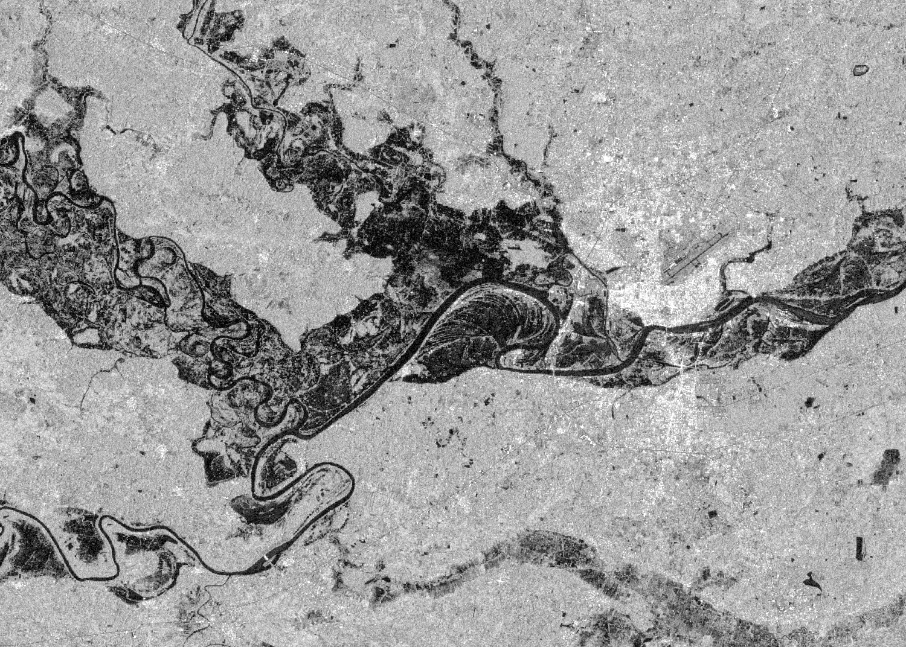
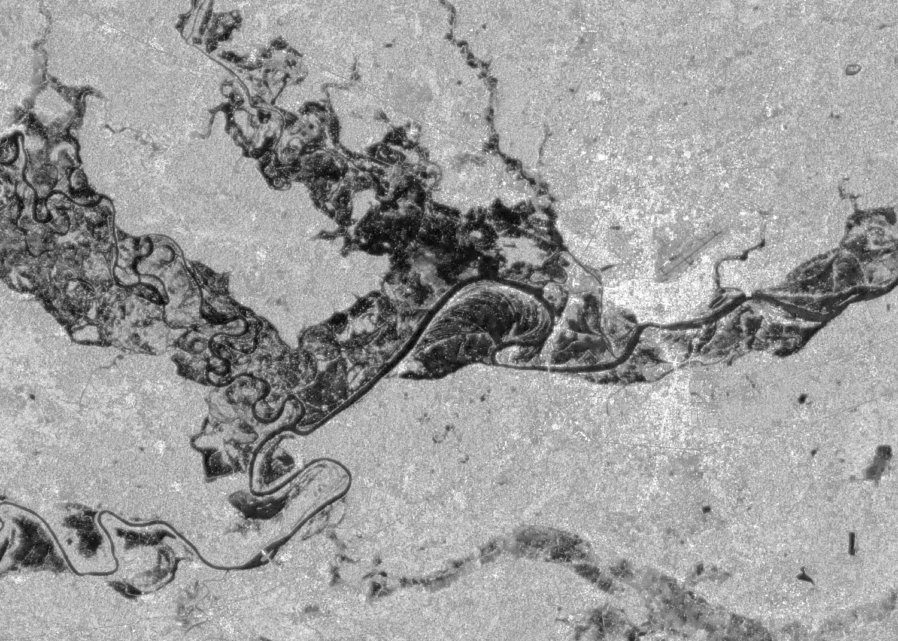
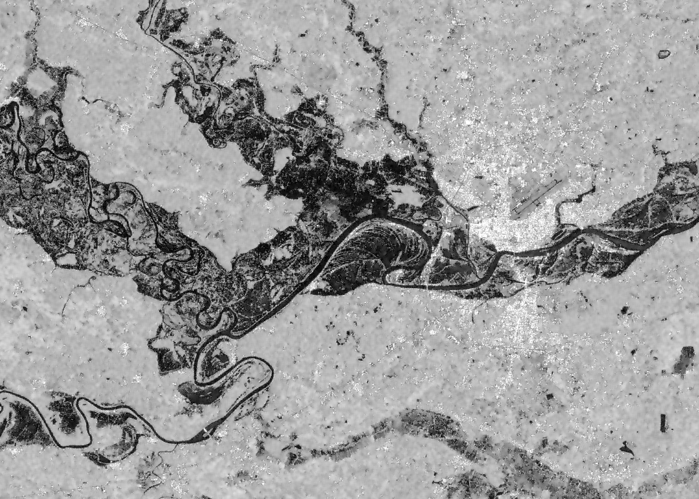
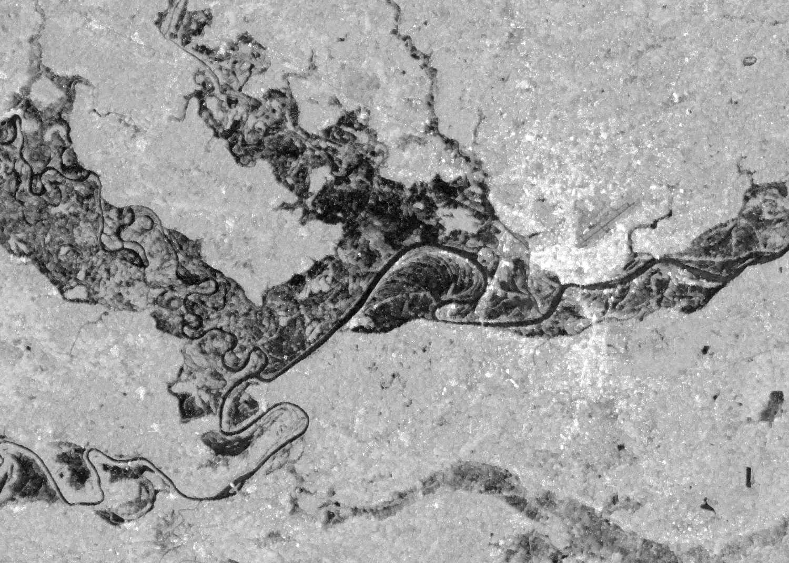
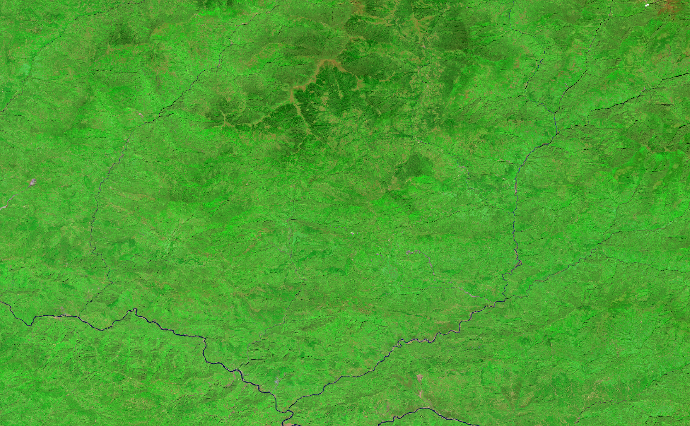
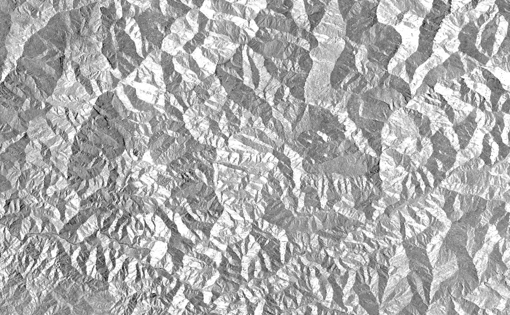
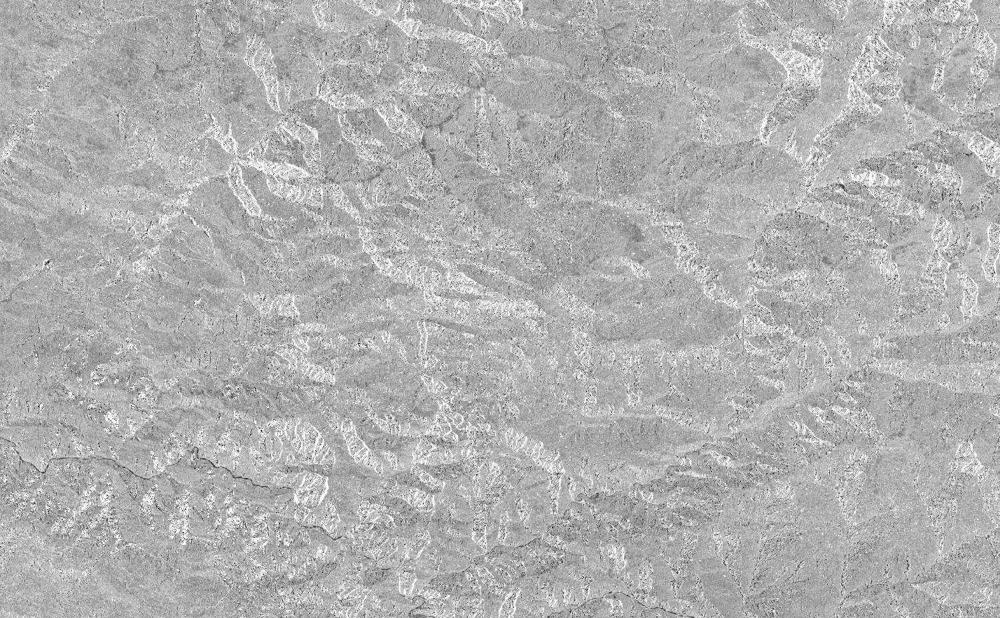
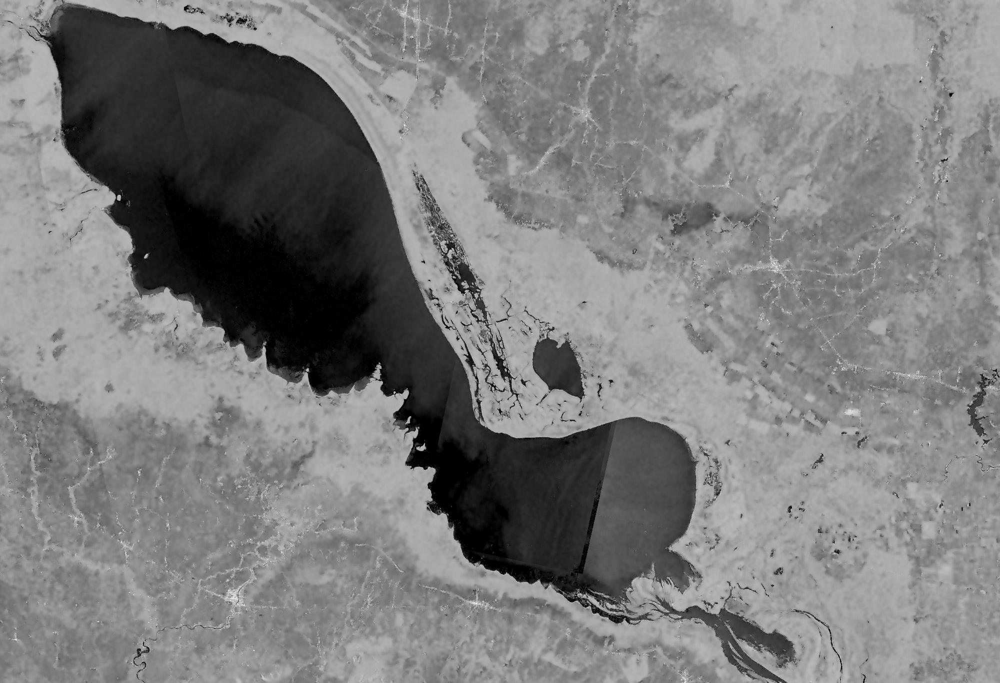
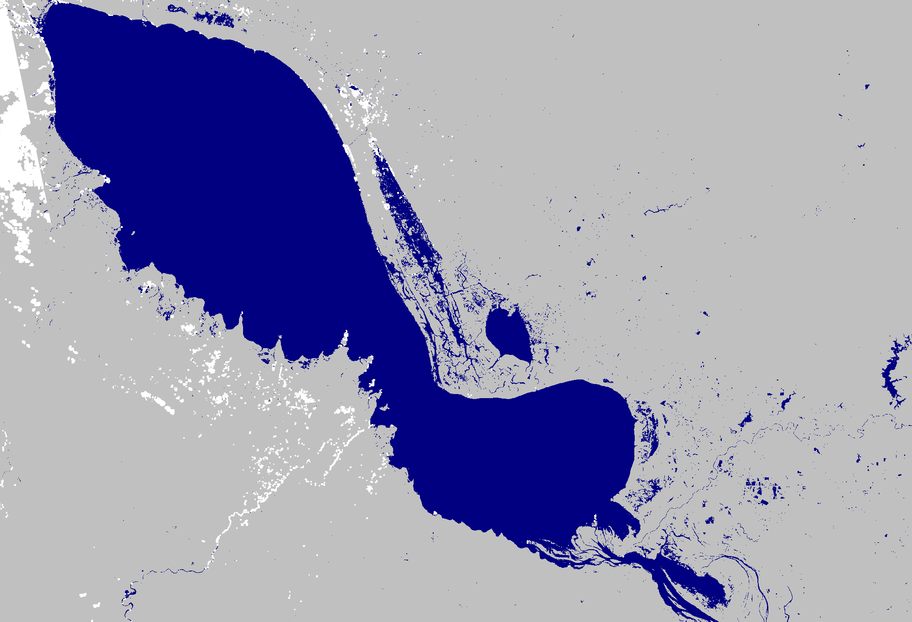
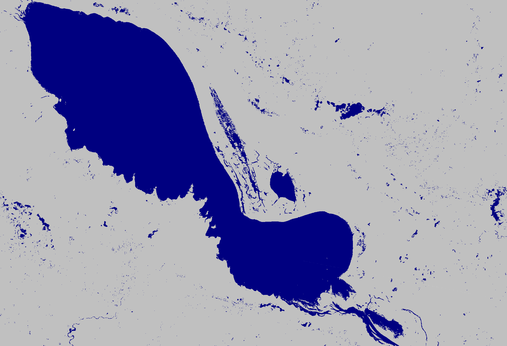

Algorithms
Here are a more in depth examples of specific algorithms for surface water mapping workflows that are implemented within hydrafloods that users can call. It is expected that the code is run in an interactive python session such as IPython or in a Jupyter Notebook as later code blocks will use variables from previous ones.
import ee
ee.Initialize()
import hydrafloods as hf
SAR Speckle Filtering Algorithms
SAR imagery is affected by artifacts called Speckle. Speckle looks like granular noise in synthetic aperture radar (SAR) data and is due to the interference of radar waves reflected from many elementary scatterers on the ground. Speckle in SAR imagery typically reduces the accuracy of image segmentation and classification so applying speckle filters is a common preprocessing step (Lee et al., 2009). Multiple algorithms have been developed by the scientific community to alleviate the effects of Speckle in subsequent SAR image processing.
hydrafloods has implemented a few of these Speckle filter algorithms in the package to help effectively use SAR imagery for image processing, in this case for surface water mapping. Here is a list of Speckle filter algorithms available:
- Lee Sigma:
hydrafloods.lee_sigma(Lee et al., 2008) - Gamma Map:
hydrafloods.gamma_map(Beauchemin et al., 1995) - Refined Lee:
hydrafloods.refined_lee(Lee, 1981)
Here is a brief example of how one might apply these algorithms to SAR data using hydrafloods:
# define a geographic region
region = hf.country_bbox("Cambodia")
# define start and end times
start_time = "2019-09-15"
end_time = "2019-09-20"
# get the Sentinel 1 collection as a Dataset
s1 = hf.Sentinel1(region,start_time,end_time)
After we have our SAR collection, we can apply the functions on the image using the apply_func() method. Since these algorithms take an image as input and output and image we can easily apply on all imagery. Watch out though...some of these algorithms (specifically refined_lee()) are extremely memory intensive and you will likely get a "User memory limit exceeded" error when applying over many (25+) images. In this case, it will work since we are only applying over a few images.
lee_sigma_filtered = (
s1.apply_func(hf.lee_sigma)
.collection.first()
)
gamma_map_filtered = (
s1.apply_func(hf.gamma_map)
.collection.first()
)
refined_lee_filtered = (
s1.apply_func(hf.refined_lee)
.collection.first()
)
original = s1.collection.first()
zoom_region = [104.60, 15.10, 104.95, 15.35]
viz_params = {
"min":-25,
"max":0,
"bands":"VV",
"region":zoom_region,
"dimensions":2000,
"crs":"epsg:4326"
}
print(original.getThumbURL(viz_params))
print(lee_sigma_filtered.getThumbURL(viz_params))
print(gamma_map_filtered.getThumbURL(viz_params))
print(refined_lee_filtered.getThumbURL(viz_params))
Try opening the examples in a new tab to zoom in and really see the differences
| Original | Lee Sigma filter |
|---|---|
|  |  |
| Gamma Map filter | Refined Lee filter |
|---|---|
|  |  |
For more information on the filtering algorithms and the specific arguments, please see the filtering module API reference
Correction Algorithms
Another common workflow when working with satelitte imagery is to correct for atmospheric and terrain effects. Most of the data collection on Earth Engine have atmospherically corrected data so hydrafloods has focused on correction algorithms for terrain (both SAR and optical) correction and a bidirectional reflectance distribution function (BRDF) correction for optical imagery.
To begin, let's import the corrections module. For demonstrational purposes, we will focus on terrain flattening in Nepal, one of the most mountainous regions in the world!
from hydrafloods import corrections
region = hf.country_bbox("Nepal")
start_time = "2020-10-29"
end_time = "2020-11-08"
Applying illumination correction on optical imagery
# get landsat 8 dataset
ls = hf.Landsat8(region,start_time,end_time)
# define the elevation dataset we want to calculate corrections from
elv = ee.Image("JAXA/ALOS/AW3D30/V2_2").select("AVE_DSM")
# apply the illumination correction on every image in dataset
ls_flat = ls.apply_func(corrections.illumination_correction,elevation=elv)
# region to visualize
view_box = ee.Geometry.Rectangle([86.1177,27.1325,86.8716, 27.5984])
vis_params = {
"bands":"swir2,nir,green",
"min":50,
"max":5500,
"gamma":1.5,
"region":view_box,
"dimensions":1500
}
# reduce the datasets to an image for visualization
original_img = ls.collection.median()
corrected_img = ls_flat.collection.median()
print(original_img.getThumbURL(vis_params))
print(corrected_img.getThumbURL(vis_params))
| Original Landsat 8 Image | Corrected Landsat 8 Image |
|---|---|
 |
 |
We can see that the algorithm corrected the poorly illuminated areas. This function is valid for both the Landsat8 and Sentinel2 imagery. More information on the illumination correction algorithm and the input arguments can be found at the corrections module page
Applying slope correction on SAR imagery
SAR imagery is fairly sensitive to terrain effects due to the signal being geometric in nature. Here we apply a slope correction algorithm developed by Vollrath et al., 2020 to reduce the effects of terrain on the data. This method however does not fully compensate for the radiometric distortions as compared to more advanced methods but still provides some correction.
# get a Sentinel 1 dataset
s1 = hf.Sentinel1(region,start_time,end_time)
# apply slope correction on every image in collection
s1_flat = s1.apply_func(corrections.slope_correction,elevation=elv,buffer=30)
# inspect the resulting bands VV and VH will have '_flat' appended
print(s1_flat.collection.first().bandNames().getInfo())
# should equal ['VV_flat', 'VH_flat', 'angle', 'local_inc_angle']
vis_params = {
"bands":"VV",
"min":-25,
"max":0,
"region":view_box,
"dimensions":1500
}
# get an image from original collection and flattened for visualization
# note here we are getting a mosaic (i.e. first valid pixel) to prevent
# visualization artifacts from ascending vs descending paths in dataset
original_img = s1.collection.mosaic()
corrected_img = s1_flat.collection.mosaic()
print(original_img.getThumbURL(vis_params))
print(corrected_img.getThumbURL(vis_params))
| Original Sentinel 1 Image | Corrected Sentinel 1 Image |
|---|---|
|  |  |
We can see that the effects of terrain are mostly removed. Note: the slope correction algorithm calculates area of terrain shadow and layover (i.e. areas that cannot be corrected) and mask those area, hince some transparent areas. More documentation regarding the slope correction algorithm and the input arguments can be found at the corrections module page
Generic Water Mapping Algorithms
The goal of hydrafloods is to provide efficient, easily accessible surface water maps. To that end, there are a few generic surface water mapping algorithms available that can be used with virtually any dataset (given some customization of parameters). Here is a list of the water mapping algorithms available:
- Edge Otsu:
hydrafloods.edge_otsu(Donchyts et al., 2016; Markert et al., 2020) - Bmax Otsu:
hydrafloods.bmax_otsu(Cao et al.,2019; Markert et al., 2020) - KMeans Extent:
hydrafloods.kmeans_extent(Chang et al., 2020)
To begin, we will access optical and SAR data for a coincident time period following the example from Using Datasets:
# area where overlap is known
region = ee.Geometry.Rectangle([103.6334, 12.4368, 104.8419, 13.2615])
# month where we know coincident data
start_time = "2019-02-01"
end_time = "2019-03-01"
# get Landsat 8 dataset
lc8 = hf.Landsat8(region,start_time,end_time)
# add the mndwi water index to the lc8 dataset
lc8 = lc8.apply_func(hf.add_indices,indices=["mndwi"])
# get Sentinel 1 dataset
s1 = hf.Sentinel1(region,start_time,end_time)
# apply gamma map speckle filter
s1 = s1.apply_func(hf.gamma_map)
# join the two datasets
joined = lc8.join(s1)
# create a composite image for the region
composite = joined.collection.median()
# define some visualization parameters to use
water_viz = {
"min":0,
"max":1,
"palette":"silver,navy",
"region":region,
"dimensions":2000
}
optical_viz = {
"min":50,
"max":5500,
"bands":"swir2,nir,green",
"gamma":1.5,
"region":region,
"dimensions":2000
}
sar_viz = {
"min":-25,
"max":0,
"bands":"VV",
"region":region,
"dimensions":2000
}
Now that we have our data here we will highlight how to use some generic surface water mapping algorithms, specifically the edge_otsu() algorithm:
# apply the edge otsu algorithm on the MNDWI optical index
optical_water = hf.edge_otsu(
composite,
region=region,
band="mndwi",
initial_threshold=0,
thresh_no_data=-0.2,
edge_buffer=300,
invert=True
)
# apply edge otsu algorithm on the VV SAR band
sar_water = hf.edge_otsu(
composite,
region=region,
band="VV",
initial_threshold=-16,
thresh_no_data=-20,
edge_buffer=300
)
# get thumb urls of results
print(composite.getThumbURL(optical_viz))
print(composite.getThumbURL(sar_viz))
print(optical_water.getThumbURL(water_viz))
print(sar_water.getThumbURL(water_viz))
| Landsat 8 Image | SAR Image |
|---|---|
 |
 |
| Landsat 8 Water Map | SAR Water Map |
|---|---|
|  |  |
This is just one example of surface water mapping and there are additional water mapping algorithms as mentioned above. More documentation regarding the water mapping functions and the input arguments can be found at the thresholding module
If there are other algorithms you would like to see in the hydrafloods package, please file an issue with specifics (and hopefully a link to the paper) on our GitHub repo.